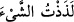

bütün isteklerini verir mi? Şâyet şerîatın menhiyât olarak saydığı bir şeyi canları çekmiş
olsa durum ne olacaktır. Bu âyetin mânâsı şudur: Elbette bütün cennet nimetleri hep
canların çektiği şeylerdir. Cennet nimetlerinde canların çekmediği ve meyletmediği
şeyler yoktur. Gerçi Allah Teâlâ, cennet ehlini, gerçekleşmesi imkân dışı olan yahut
yasaklanmış bulunan her hangi bir şeyi arzu etmekten korur, denilmiştir.
Fakir (Bursevî) der ki: Bu âyet şuna delâlet etmektedir: Cennette bütün din ve
mezheplerde haram kılınmış olan livâta yoktur. Bu durum kişinin eşine arkadan
yaklaşması sûretiyle de asla cennette olmayacaktır. İmam Mâlik bir dönem kişinin eşine
arkadan yaklaşmasına cevaz vermiş olduğu halde bilahare bu fetvadan dönmüştür.
Cennette livatayı arzulamak yoktur. Çünkü bu durum ilâhi hikmete muhâliftir. Bazıları
buna cevaz vermişlerdir. Bunlar el-Eşbâh ve’n-nezâir kitabının şerhinde zikredilmiştir.
Bu görüş sahipleri bu konuda ciddî bir yanlış içindedirler. Biz bu husûsu bahse konu
âyetlerde Lût kıssasında beyan etmişizdir. Şaraba gelince şarap livâta gibi değildir.
Çünkü şarabın helal ve mübah sayıldığı bazı din, millet ve devirler vardır.
Hulâsa her ne olursa olsun cennette ilâhî hikmete muhâlif bir durum yoktur. Bunun için
cennette helâl haram gibi bir takım teklif ve hükümler olmamasına rağmen yine de eşler,
mahremleri olmayan erkeklere karşı örtünürler.
“Gözlerin hoşlandığı şeyler…” “/lezeztüşşey’e”, onu lezîz buldum,
demektir. Mânâ şöyledir: Gözler o nimetleri görmekle lezzet bulur, mesrûr ve rûşen
olur.
Müftî Sa’dî şöyle demiştir: Bu ifâde âyetteki “melekler ve ruh o gece rablerinin
izniyle her iş için iner de iner” (el-Kadir, 97/4) gibidir. Cennet nimetlerinin şânını
yüceltmek için getirilmiştir. Zîrâ Mevlâ’nın cemâlini seyretmek de cennet nimetleri
cümlesindendir. Kadir gecesinde yeryüzüne inen meleklere Ruh Cebrâil (a.s.) dâhil
olduğu halde, onun şânını yüceltmek için ayrıca zikredilmiştir. “Nazar”; yani Mevlâ’nın
cemâlini seyretmek, en büyük lezzet ve nimet odur.
Câfer şöyle demiştir: “Canların çektiği” şeylerle “gözlerin rûşen olacağı” şeyler
tamamen farklıdır. Çünkü cennette bulunan nimetler ve canların çekip arzu ettiği
lezzetler, gözlerin Mevlâ’nın cemâlini seyretmekle bulacağı lezzet yanında denize
nisbetle oraya daldırılan bir parmak mesâbesindedir. Çünkü cennet nimet ve
lezzetlerinin bir bakıma bir sınırı ve sonu vardır. Zîrâ o nimetler de yaratılmıştır. Bâkî
olan âhiret hayatında ise gözler ancak sınırı ve sonu olmayan bâkî ve ebedî olan zâtın
cemâline bakmakla mesrûr ve rûşen olur.
Vasît’te belirtildiğine göre bu iki kelime, cennet bahçelerinin nimetlerine sâhip olan
bütün cennet ehlinin, bu nimetlerden görmekle mi yoksa tatmakla mı istifâde edeceği
hakkında haber vermektedir. Keşfu’l-esrâr’da da böyle denilmiştir.
Bu âyet Cevamiu’l-Kur’an’dan yani çok kısa ifâdeyle çok kapsamlı mânâlar ihtivâ
eden âyetlerdendir. Çünkü Allah Teâlâ bu iki lâfızla ortaya öyle bir mânâ koymuştur ki
bu kısa ifâdeyle anlatılan hususları bütün yaratıklar bir araya gelerek detaylı olarak
anlatmaya çalışsalar işin içinden çıkamazlar.